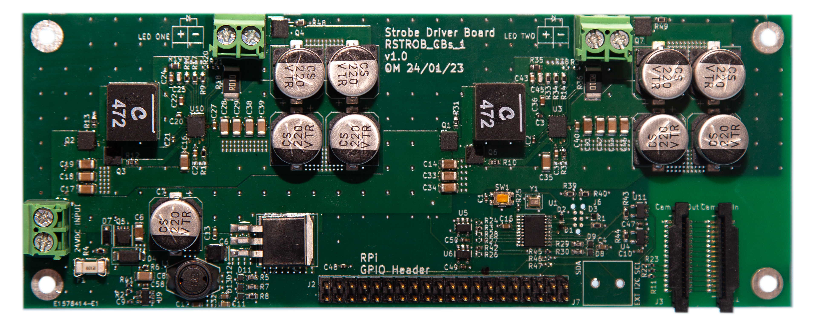
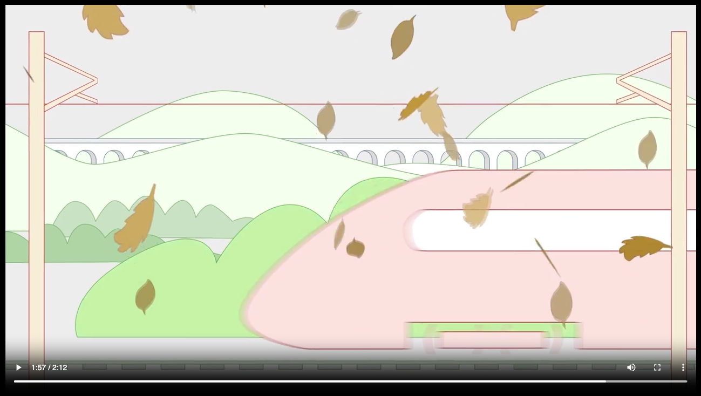
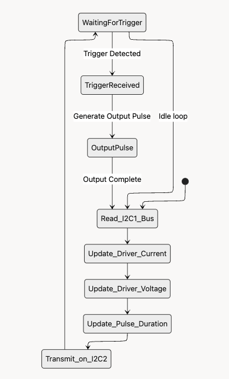
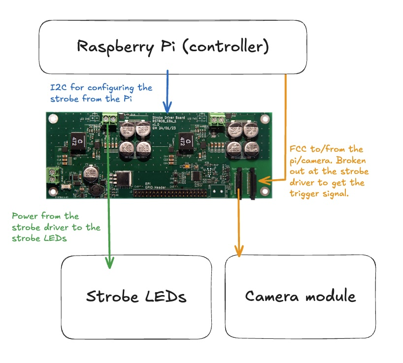

Strobe driver for imaging rail tracks

"Leaves on the line"
“Leaves on the line” is a running joke amongst the British population 
Low adhesion rail tracks reportedly cost GB Rail £350 million a yearRail
safety and standards board.. With more than 20,000 miles of track across England,
Scotland, and
WalesNetwork
Rail., identifying which tracks are going to cause a problem is not an easy
feat. If passenger trains had a system for recording friction information about tracks, then it might be
possible to predict where low friction will be an issue next.
Neural Network-Based Regression for Local Adhesion Estimation (COF-UOS-02)
The Lewis group have demonstrated that friction conditions on the rail head can be estimated using
images of the surroundings, images of the rail head and other sensor dataA
Machine Learning Approach for Real Time Wheel/Rail Interface Friction Estimation.. If
imaging systems could be integrated into passenger trains, then it
might be possible to identify friction problems ahead of time and resolve them before they wrought
havoc.
One problem with imaging rail tracks from moving trains is motion blur. Even if you crank your shutter
speed down to 1/4000th of a second, the train will have moved half a centimetre while the image was
being captured. To solve this, you can use a really fast, synchronised flash.
If instead of relying on a 250 microsecond shutter speed, you had a 6 microsecond flash, then the train
would have travelled less than 50 microns, a 40 times improvement. The catch is this must be
synchronised with the shutter, and be bright enough to overwhelm the remaining information captured
whilst the shutter is open, but the flash is not on.
System and strobe driver
The system is driven by a Raspberry Pi 5 

To ensure the flash is bright enough, the board can drive 500 Watts at the output. This allows a seriously bright strobe!
| Peak power delivery | 500 Watts |
|---|---|
| Controllable pulse duration | 6-100 microseconds |
| Strobe frequency | Up to 30 Hz |
| Control | I2C from Raspberry Pi |
| Trigger | Raspberry Pi GPIO or camera trigger |
Engineer's notes
Breaking out FPC/FCC
Camera comms are fast and sensitive. You’ve got to be particularly careful not to tip the system’s signal-to-noise ratio over the edge. At the start of the project, we were concerned that, by breaking out the FCC between the Pi and the camera and intercepting some of the lines, we would mess up the integrity of the signal. As a mitigation for this, we made the board compatible with triggering from the Raspberry Pi GPIO or the camera’s trigger line.
TPS55289-Q1
The most interesting component of this project was the digitally controlled power supply. Because we
wanted to be able to set the strobe voltage and current, as well as the flash duration, we chose to use
a digitally controlled power supply chip.
The TPS55289-Q1 is what it says on the tin, a “36V, 8A Buck-Boost Converter with I2C Interface”.
Have we used it before
Phil’s notes on whether it was good to use